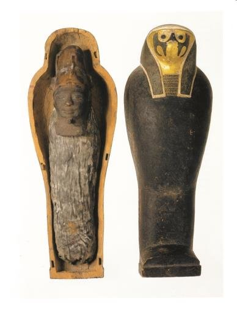

The story of Osiris begins with him as the king of Egyptian gods. He was a benevolent ruler, and all of his subjects were quite happy with his rule. All of his subjects, that is, except his brother Seth. Seth was the God of Deserts and Chaos, and wanted Egypt to waste away into a desert wasteland that he could then rule over. In order to make this happen, he pretended to be happy for Osiris, and offered to throw a party in his honor. At the party, Seth presented a fantastic sarcophagus that was encrusted with gold and littered with jewels. All of the guests at the party were in awe of the sarcophagus, including Osiris. Once everyone had seen the sarcophagus, Seth offered a simple challenge: whoever fit the best in the sarcophagus would get to keep it. After he said this, everyone eagerly lined up, hoping that they would be the one to fit in it perfectly. However, each party member that tried simply did not fit well, until finally, Osiris attempted to win. As soon as he laid down, the lid of the sarcophagus slammed shut, trapping him inside. Seth then took his body and chopped it up into many pieces, and spread those pieces across Egypt. After this occurred, Seth took the throne, and Egypt was cast into chaos.
